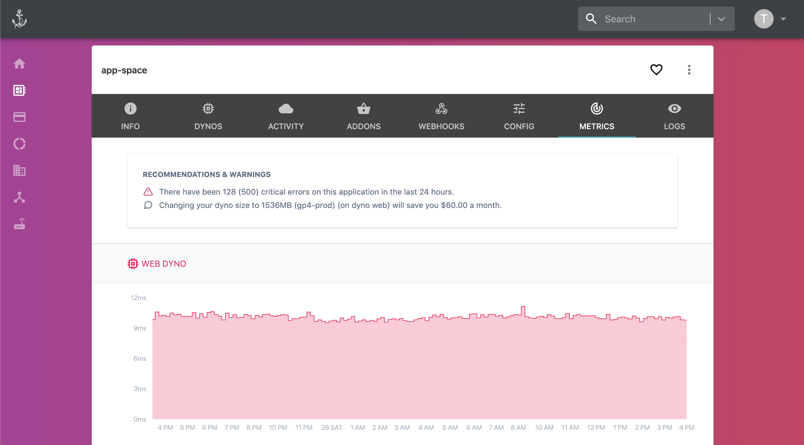

Create apps on-demand, and deploy Docker images with ease.
Websites route back to applications via path-based-routing.
Connect apps to Github and release on new commits.
Pipeline apps together and promote images to production.
Better, Faster, Stronger
Future proof and performant.
Up to16GBMemory Dynos
With HTTP239%lower resp. times
Up to1M/Slog streams

Akkeris takes platforms to a new level of capabilities and performance. With built-in support for Istio, service mesh and HTTP2 it's fast and the future. Stream gigabytes of logs to Papertrail or any central logging provider.
Extendable and Expandable
Plugins, Addons, Webhooks and more.
Akkeris integrates with a variety of systems to keep you in your workflow. Expand its capabilities through plugins, a powerful way to add new commands to the CLI.
$ aka plugins
:: pgId:8f2bd0cf-cdbe-4f92-a59f-57416f6de69bRepo:https://github.com/akkeris/cli-pg-pluginDescription:A postgresql plugin to help manage Akkeris databases:: memcachedId:6f38fd0f-561c-47cb-9314-f134050c8720Repo:https://github.com/akkeris/cli-memcached-pluginDescription:Memcached CLI plugin to flush cache and get stats